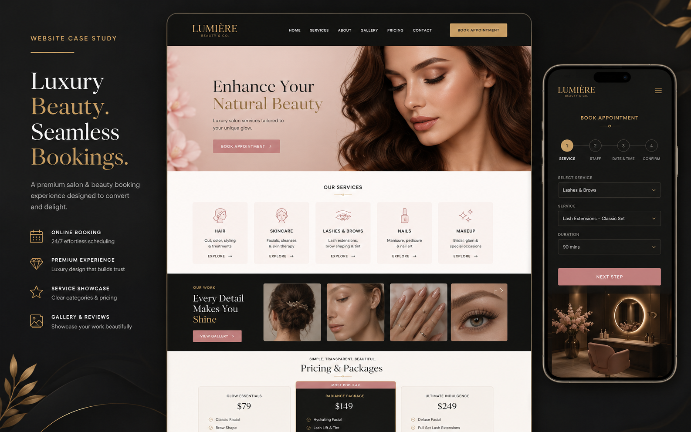
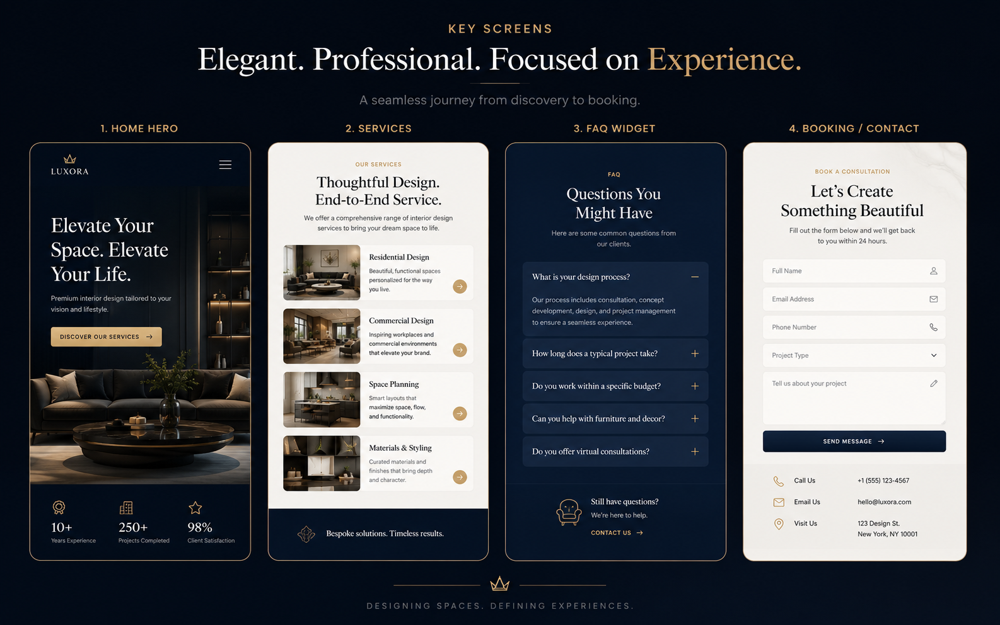
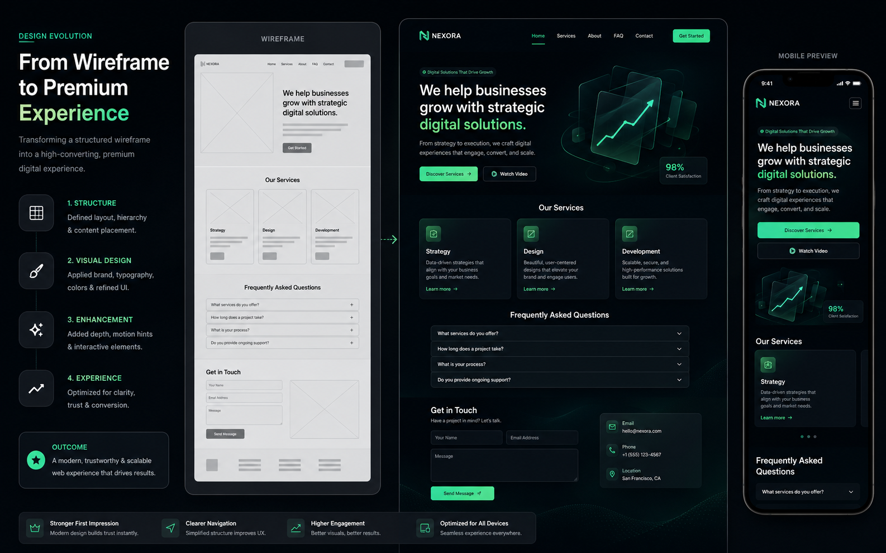
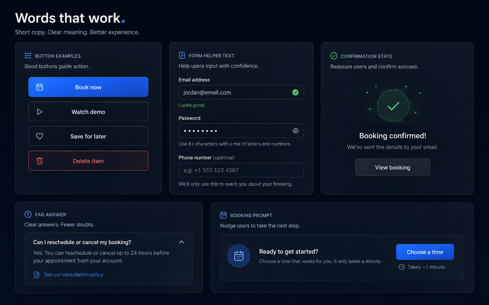

Concept Case Study
Salon & Beauty Booking Website
A beauty website concept designed around service discovery, visual trust, price clarity, and a booking-first mobile journey.




Problem
Salon customers need to quickly compare services, prices, proof, and appointment options, especially from mobile or social traffic.
Target Users
New beauty clients, returning customers checking services, and salon owners who need cleaner appointment requests.
UX Goals
Reduce booking hesitation, make services easy to scan, show visual proof, and keep the appointment request flow short.
Design Solution
Luxury hero, service menu cards, before/after interaction, gallery, FAQ assistant, and a short booking form.
User Flow
Visitor sees the salon mood, checks service categories, views results, opens questions, then submits an appointment request.
Outcome / Value
The page feels premium while still supporting the practical business goal: more confident appointment inquiries.